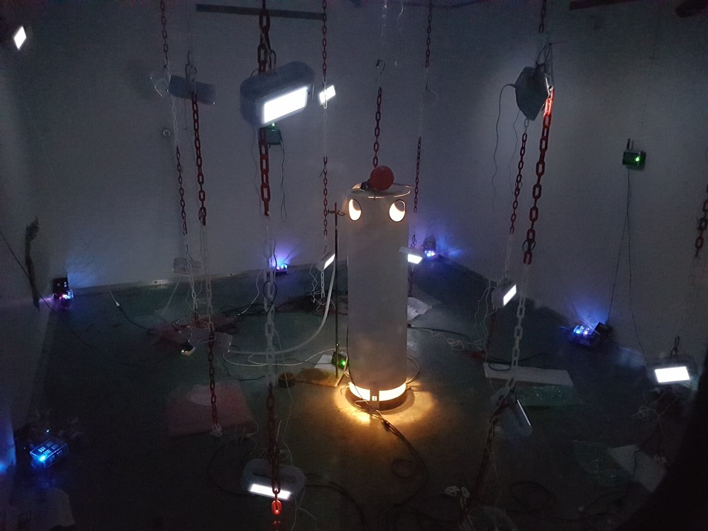
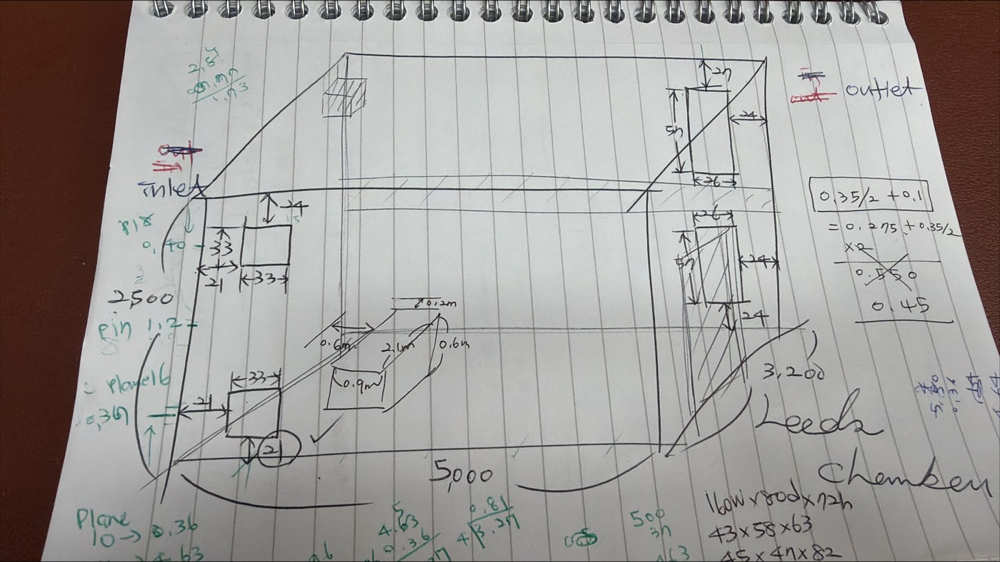
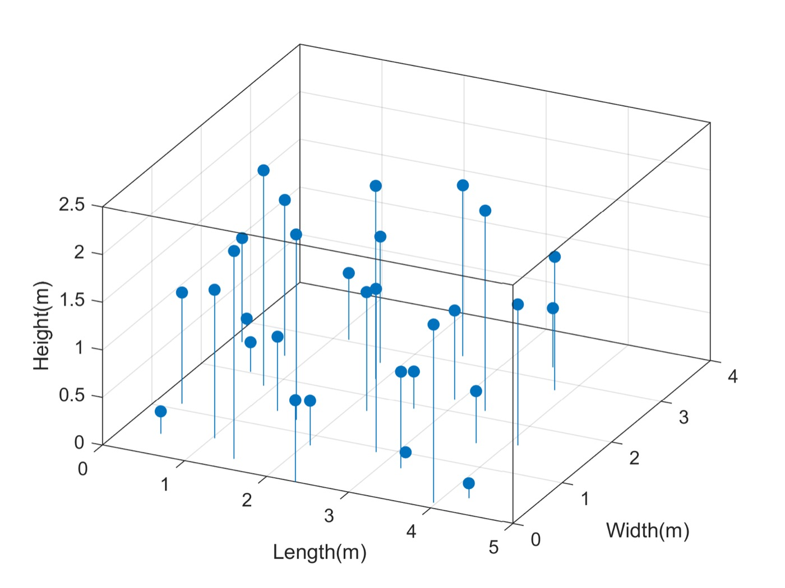
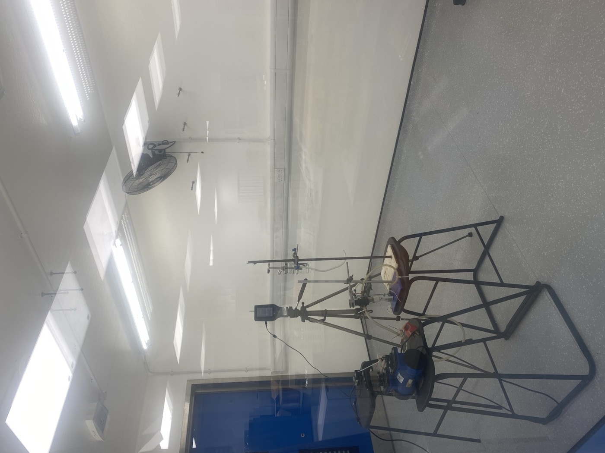

You cannot run a controlled experiment on an occupied hospital ward. You cannot release a tracer, repeat it eight times, move the ventilation rate and ask a patient to stay still. So we built a room where you can: a purpose-built Class II aerobiology chamber, five metres by three point two by two point five, where the air does exactly what we tell it to.

A heated thermal manikin at the centre of the chamber, surrounded by the sensor lattice. The manikin reproduces the buoyant plume of a real person, which is what carries exhaled aerosol upwards before the ventilation gets hold of it.
Why a room and not a model
Airborne transmission happens at room scale. A droplet nucleus leaves someone's breath, is caught by the thermal plume rising off their body, and from there it goes wherever the room's air takes it: into the extract, into a corner, or into the breathing zone of the person in the next bed. Simulation can describe that. Only measurement can check it.
The chamber gives us the half that real buildings cannot. Supply and extract are controlled, so we can set a ventilation rate and hold it. Two heated thermal manikins, which we call DINbots, stand in for occupants and generate the same buoyant plume a body does. Airspeed sensors and distributed air-quality monitoring record what actually happened, rather than what the design drawing says should have.

The chamber as first sketched: 5,000 by 3,200 by 2,500 mm, with the inlet and outlet positions worked out on the page.
Mapping a release, and checking the instruments
One of the first things a controlled room is good for is finding out whether your instruments agree with each other. In a series of tracer experiments we released carbon dioxide at the inlet and logged it on four different sensor types at once — co-located on a table in the centre first, to compare like with like, and then distributed through the volume in a lattice.

Where the sensors went. Positions spread through the full volume, including floor and ceiling corners and chains hung at three heights, so the map covers the room rather than one convenient bench.
The chamber was run at six air changes per hour, with fifteen minutes to reach steady state, a timed release, and thirty minutes to return. Everything logged every two seconds. Repeat it with a manikin in the middle, and then with a person sitting in the room, and you can see how much the occupant changes the answer.
That matters well beyond the chamber: cheap CO2 sensors are now sold as a proxy for ventilation adequacy in classrooms and offices, and knowing how far apart two of them read in the same room, at the same moment, is the difference between a useful signal and a reassuring number.
From tracer gas to real organisms

Sampling equipment set up inside the chamber.
Carbon dioxide is a well-behaved stand-in, but it is not a pathogen. The chamber is rated for Class II work, so category II microorganisms can be aerosolised and then recovered: in the air with an Andersen six-stage impactor, which separates particles from 0.65 to 6 micrometres by the depth they would reach in a respiratory tract, and on surfaces with AMPAS, a sampling device developed here.
Alongside those, a portable Plair Rapid-E+ detects and characterises particles from 0.3 to 100 micrometres in real time — bacteria, fungal spores, pollen, virus aerosol and microplastics — using scattered light and fluorescence. Because it is portable, the same measurement can be made in the chamber and then taken out to a hospital ward.
What we test in here
The chamber is where interventions get examined before anyone claims they work: ventilation strategies, air cleaning, and far-UVC disinfection at 222 nm. A device that reduces airborne counts in a sealed box at a manufacturer's bench may do very little in a ventilated room with a warm body in it, moving air around. Here we can put it in the room, run it against a control, and measure the difference.
The ward is the other half
None of this is useful on its own. A chamber is a simplification: no visitors, no doors opening, no beds being made. That is the point of it, and also its limit.
The counterpart is fieldwork. In HECOIRA, an EPSRC project led by Catherine Noakes, the group spent eighteen months recording air quality on a surgical rehabilitation unit and a respiratory ward, sampling surfaces, air and hands, and observing how healthcare workers actually touch things during care. The chamber tells you what the physics does when nothing else interferes; the ward tells you what interferes.
Put the two together and you can say something useful about a real building — which is the only claim worth making.
The chamber and our other facilities · Indoor Air Quality and Airborne Infection · How we model it
Interested in using the chamber? We share it with academic and industrial partners — m.f.king@leeds.ac.uk.